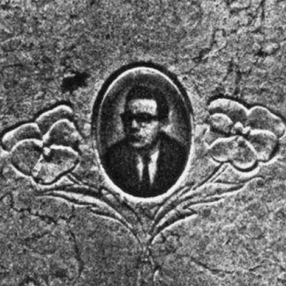

Portrait d’archive
René Ariel Lévy (F)
René Ariel LEVY (F)
René Ariel Oriel LEVY est né le 03/03/1927 à Lyon en France.
Il est fusillé à Portes les Valences le 08/07/1944. Il avait 17 ans.
Apprenti tailleur, fils de Joseph et Rosa Eskenazi. Fusillé avec 30 autres personnes.
Dernière adresse connue : 45 rue Julien 69003 (Lyon)
Nom : LEVY
Prénom(s) : René Ariel
Date naissance : 03/03/1927
Âge (ans) : 17
Lieu naissance : Lyon
Pays ou département : Rhône
Lieu rassemblement : Portes
Dernière adresse : 48 rue Julien
Ville : Lyon
Code postal : 69003
“N° Convoi : 86” fusillé
Date d’exécution : 08/07/1944
Informations diverses : Fils de Joseph Lévy et Rosa née Eskenazi. Ouvrier tailleur. Détenu à la prison de Montluc à Lyon, amené à Portes-lès-Valence où il est fusillé en représailles de sabotage le 8 juillet 1944.
Fusillé